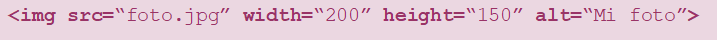
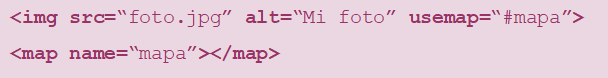

Contenido encajado en HTML
Una vez visto cómo se introduce texto en HTML y las diferentes posibilidades de formateado que existen, veremos cómo se puede introduccir contenido encajado, en concreto contenido multimedia, en una página web.
Imágenes
Para poner una imagen simple en un documento HTML se utiliza el elemento ‹img›. Se trata de un elemento vacío, por lo
que no lleva etiqueta de cierre.
Este elemento requiere que se espeficique el atributo src (source), que contiene la
ruta de la imagen. Esta ruta puede ser relativa o absoluta. Otros atributos posibles son:
- Texto alternativo (alt)
- Descripción textual de la imagen para usarla en situaciones en que no puede ser vista/mostrada. No es obligado ponerlo, pero sí muy recomendado.
- Width (ancho)
- Se utiliza para indicar el ancho que tendrá la imagen.
- Height (alto)
- Se utiliza para indicar el alto de la imagen.
*Si solo ponemos anchura o altura, se mantienen las proporciones. Si pongo las dos y no encajan se deformará la imagen.
Tipos de imágenes
- Bitmap estáticos (con y sin pérdida) 🠒 PNG, GIF, JPG
- Documentos vectoriales 🠒 SVG
- Animados 🠒 APNG, GIF
- Otros 🠒 PDF, MNG
Mapas de imagen
Cuando anidas una imagen en un elemento ‹a›, la imagen entera enlaza a un documento HTML. Un mapa de imagen, por otro lado, contiene varias regiones que enlazan cada una a direcciones distintas.
Para añadir un mapa de imagen, se debe insertar ésta de la forma habitual, pero habrá que añadir el atributo usemap donde pondremos el identificador del mapa (#nombre_mapa).
Será necesario crear un mapa, para ello utilizaremos el elemento ‹map› con un atributo name que indique el nombre del mapa.
Dentro del elemento ‹map›, se definen las diferentes regiones o zonas con el elemento vacío ‹area›, que tiene los siguientes atributos:
- Shape 🠒 default, rect, circle, poly.
- Coords 🠒 coordenadas separadas por comas. Ver en el apartado siguiente
- Href 🠒 URL asociada
- Alt 🠒 texto alternativo. Es obligatorio ponerlo si se añade un enlace href
- Download
- Target
Coordenadas
- Rect: x-izq, y-sup, x-dcha, y-inf
- Circle: x-centro, y-centro, radio
- Poly: x1, y1, x2, y2, ..., xn, yn
Símbolos especiales
HTML fue creado para el alfabeto inglés por lo que posteriormente se tuvo que buscar un sistema para mostrar los denominados 'caracteres especiales' que no forman parte de dicho alfabeto. Para ello se utilizan determinadas cadenas de texto que el navegador entiende.
El formato que se sigue es: &nombre_simbolo;. Algunos ejemplos son:
- Espacio en blanco:
- Non-breaking Space 🠒
- Este símbolo indica que ese espacio en blanco no se podrá usar como salto de línea.
- Eñe:
- ñ 🠒 ñ / Ñ 🠒 Ñ
- Acento agudo:
- á 🠒 á / Á 🠒 Á / é 🠒 é /...